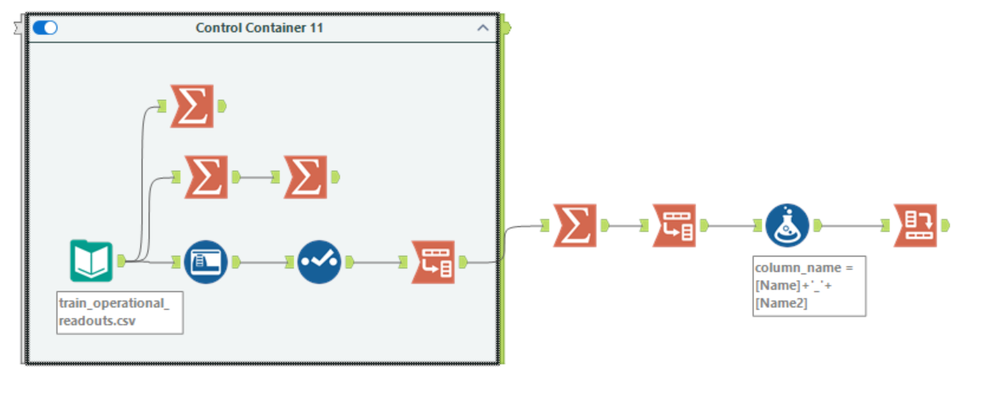
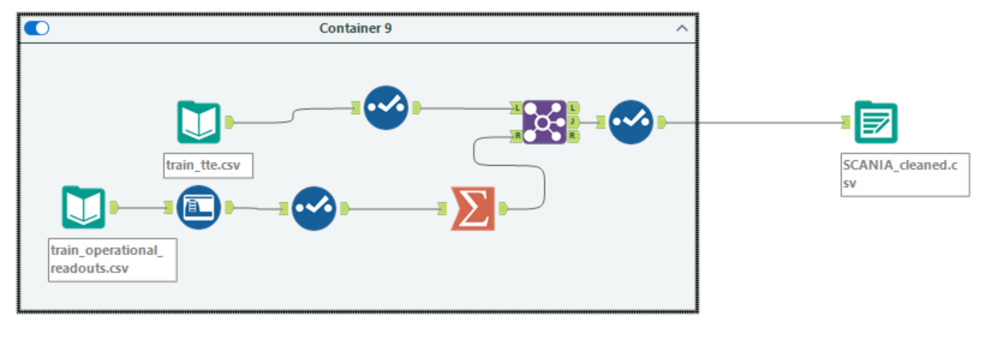
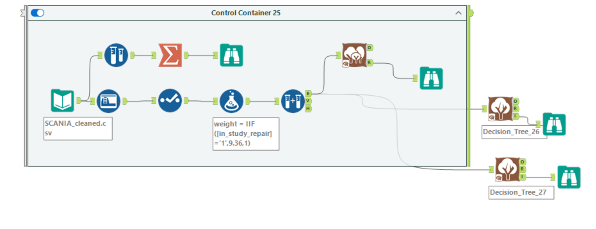
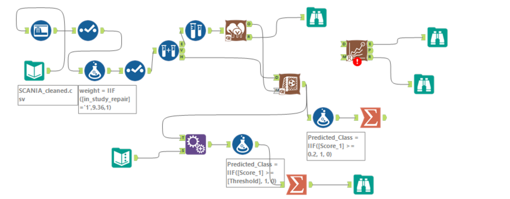

Heavy vehicles log thousands of sensor readouts over their service life, and somewhere in that
history is the signal that a component is on its way out. This project builds a predictive
maintenance pipeline in Alteryx Designer on the SCANIA Component X
dataset, predicting in_study_repair — whether a truck fails within the study
window — from 420 aggregated sensor features.
PROBLEM STATEMENT
Only 9.65% of trucks fail during the study (2,272 failures against 21,278
non-failures). A model that predicts “no failure” for every truck is 90% accurate
and completely worthless. The real work is not fitting a model — it is making sure the
model is learning from sensor behaviour rather than from the label, and then choosing an
operating point where catching failures actually matters more than looking accurate.
The interesting part of this project turned out to be the debugging: two label leaks that made
the model look perfect, an imbalance correction that had to be confined to the training branch,
and a decision threshold that the default 0.5 cutoff gets badly wrong.
Data Understanding
The raw data arrives as three files at different grains. train_tte.csv is one row per
truck and carries the time-to-event label. train_operational_readouts.csv is one row
per truck per time step, holding the sensor counters.
train_specifications.csv holds static truck specs.
A Decision Tree trained on the specification columns alone found no splits at all,
so specs were ruled out as standalone predictors early. The signal is in the readouts —
which is also where all the awkwardness lives.
Exploring and Reshaping the Readouts
The readouts cannot be modelled in the shape they arrive in. 105 of the sensor columns are
V_String fields storing histogram-encoded strings, and every truck has a different
number of readings, so there is no fixed-length vector to hand a tree model.

Exploration workflow — profiling branches, then the transpose / summarize / cross-tab reshape
Two Summarize branches hang directly off the input purely to profile it — one of them
chained, counting readings per truck and then summarizing that distribution. That is where the
5 to 303 readings per truck range came from, and it is what ruled out treating
the readouts as a fixed-width time series.
The main branch solves the shape problem with a transpose-aggregate-pivot pattern rather than
hand-writing hundreds of aggregation rules:
1
Transpose to long format
After Data Cleansing and a Select, a Transpose folds every sensor column into name/value rows — so one rule can be applied to all 105 sensors at once, regardless of how many there are.
2
Aggregate every sensor in one pass
A Summarize grouped by truck and sensor computes Min, Max, Avg and StdDev — collapsing each truck’s variable-length history into four numbers per sensor.
3
Build the feature names
A second Transpose puts each statistic on its own row, and a Formula concatenates the statistic with the sensor it came from — producing names like Max_272_0 and StdDev_158_9, the ones that later surface at the top of the variable importance ranking.
column_name = [Name] + '_' + [Name2]
4
Cross Tab back to wide
A Cross Tab pivots those generated names back into columns, producing 420 features at one row per truck.
The payoff is that nothing in this branch is hardcoded to a sensor count. Add or drop sensors
upstream and the feature table regenerates itself.
Building the Modelling Table
With features at one row per truck, the last preparation step is attaching the label from the
time-to-event file.

Data preparation workflow — aggregated readouts joined to the time-to-event labels
The aggregated readouts are joined to train_tte.csv on the truck key, attaching
in_study_repair to every feature row, and a final Select trims the result. The
modelling table comes out at 422 columns × 23,550 rows — the single
input every downstream workflow reads.
Leakage Detection and Removal
The first models scored close to 100% accuracy and F1. On a problem with a 9.65%
positive rate, that is not a result — it is a bug. Variable Importance plots found two
predictors that were encoding the answer.
LEAK 1
weight
The class-weighting column IIF(in_study_repair='1', 9.36, 1) was mistakenly fed in as a predictor rather than used as a case-weight parameter — a near-direct encoding of the label. It dominated Gini importance at roughly 480–900 whenever it was present.
LEAK 2
length_of_study_time_step
Leaky by construction: observation length is truncated at failure for repaired trucks, so the field encodes the outcome through the study design rather than through the truck’s actual condition.
Both were removed from every predictor set. Headline metrics collapsed from a fake 100% down to
honest numbers in the 60–90% range — a deliberate, correct regression, not a
failure. A model that predicts using disguised versions of its own label looks perfect
in testing and is useless on any truck the study has not already resolved.
Handling the Imbalance
Trained naively on 90/10 data, every model collapses to predicting “no failure” for
everyone. Alteryx’s Random Forest has no native case-weight parameter, so the correction is
applied by oversampling the minority class — but only in the training
branch.
Create Samples splits the data 70/15/15 into Estimation, Validation and Holdout
first, and oversampling is applied to the E branch only. Doing it in the other order
would duplicate rows across the splits and leak training records into evaluation. Validation and
Holdout keep the real-world class balance, which is what keeps the numbers honest.
Decision Tree does support native sampling weights, so both variants were tested —
a weighted tree and an oversampled tree — to compare the two corrections directly.
Model Comparison

Model selection — two Decision Tree variants and a Forest Model from the same samples
Measured on the untouched Validation sample:
Model
F1
AUC
Acc_0
Acc_1
Random Forest
0.275
0.728
0.566
0.778
Decision Tree (weighted)
0.251
0.641
0.612
0.640
Decision Tree (oversampled)
0.219
0.664
0.274
0.919
Random Forest wins on both F1 and AUC, and its Precision-Recall and ROC curves
dominate both tree variants across nearly the full range — not a marginal win that could
flip on a different split.
The oversampled Decision Tree’s 0.919 on Acc_1 is a trap, not a strength. It was flagging
failures indiscriminately, and Acc_0 collapsed to 0.274 as a result. Comparing models on
threshold-independent metrics like AUC and PR curve shape — before touching the
threshold — is what keeps “which model is better” from being confused with
“which threshold got luckier.”
Holdout Evaluation and Probability Recalibration

Final Random Forest workflow — holdout scoring with recalibration, plus the threshold sweep
A forest trained on oversampled data has learned an artificial ~50/50 world, so its raw output
probabilities are biased toward failure. Before scoring the Holdout sample, the Score tool’s
oversampling-correction option rescales those probabilities back to real-world
prevalence (target in_study_repair, value 1, original
9.65%).
The confusion matrix is then computed manually through a Formula → Summarize → metric
pipeline, because Alteryx’s Model Comparison tool recalculates its own probabilities from
the raw model object and would silently discard the corrected scores.
Decision Threshold Tuning
With calibrated probabilities on held-out trucks, the last question is where to draw the line.
Nine thresholds from 0.10 to 0.50 were swept in a single pass — a Text Input of candidate
values, cross-joined onto every scored record with Append Fields, then classified and summarized:
At the chosen 0.20 cutoff the full picture is 80.1% accuracy, 22.2% precision, 46.2%
recall, 30.0% F1 — the point at which F1 peaks across the sweep.
WHY THE DEFAULT FAILS
At the default 0.5 cutoff the model reports 90.6% accuracy while recall
collapses to 5.2% — it would miss 95% of real failures. Giving up ten
points of accuracy to move from 5.2% to 46.2% recall is the entire point of the exercise: a
false alarm costs an unnecessary inspection, a missed failure costs a roadside breakdown.
Honest Limitations
This is a defensible first baseline, not a production system. What it does not yet do:
Recall is still only 46.2% at the chosen operating point — the model misses more than half of actual failures. Acceptable as an honest baseline; not yet good enough for a domain where missed failures are expensive.
A legitimate signal was thrown away.length_of_study_time_step was dropped rather than reframed — truck maturity is real information, but the leaky version could not be salvaged as-is.
Aggregation discards temporal structure. Min/Max/Avg/StdDev means a truck with a sudden late-stage spike and one with a slow steady rise can produce identical feature vectors.
Only two model families were tried, at default hyperparameters, with no feature selection beyond the aggregation statistics.
The binary framing is a simplification. Collapsing to in_study_repair discards the richer imminence labels and ignores that failure timing is itself informative.
🚧
Where this stands
The classification cycle runs end to end: prepared data, leak-free predictors, a compared and
selected model, recalibrated probabilities, and a justified operating point. Next up is a
feature importance write-up of the top sensors
(Max_272_0, Max_158_9, StdDev_158_9), a
spec-group failure-rate analysis, and a usable scoring
artifact that takes a new truck’s sensor data and returns a risk score rather
than a static report. Reframing the threshold around explicit inspection-versus-breakdown
costs, and a later survival-modelling pass (Cox proportional hazards) that uses the
time-to-event data properly instead of discarding it, are the documented follow-ups.